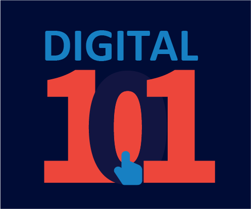

Challenge Courses and Digital 101
This page will provide information and resources regarding the challenge courses and Digital 101 offered by the college.
 Digital 101
Digital 101 is a mandatory course for all students in the second semester of their undergraduate studies. It is a course that introduces students to the basics of digital technology and its applications.
It is worth 1 credit, and has small video lectures and quizzes to evaluate your progress. To avoid issues, login with the Email you have provided to the college for registration.
Registration for the exam is free and Registration codes will be provided to students by their HOD's or Staff Advisors.
Click here to register for Digital 101